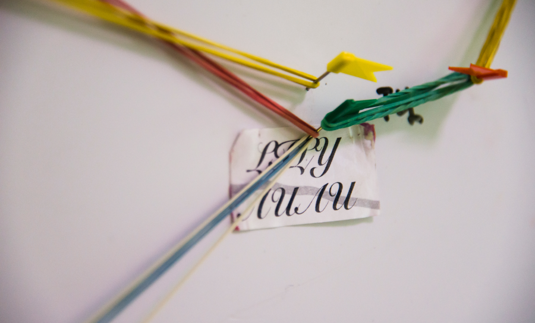
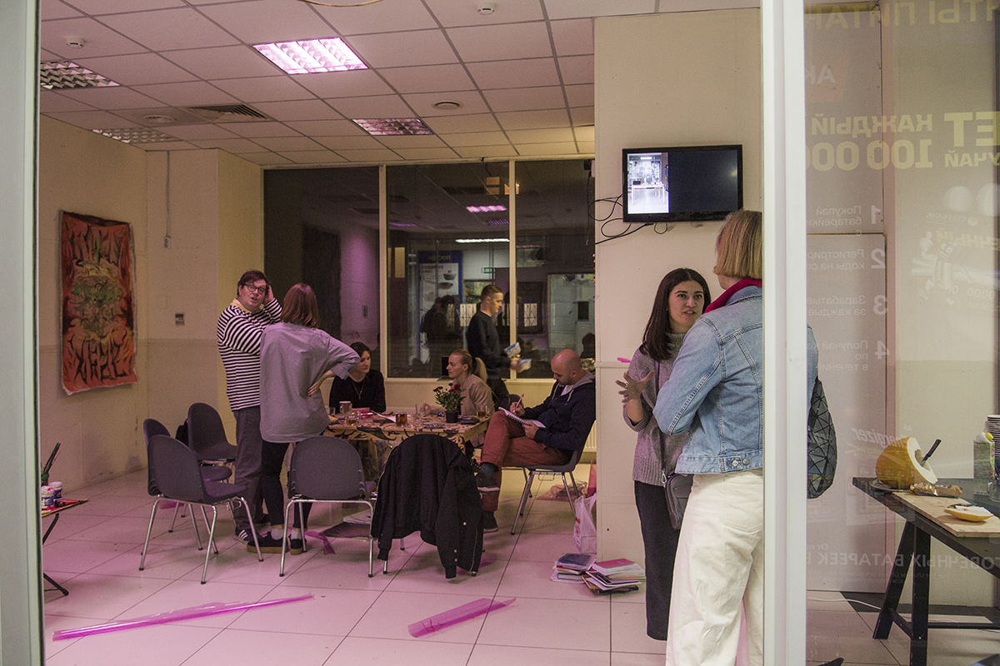
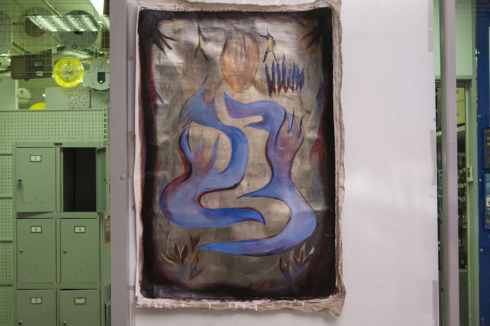
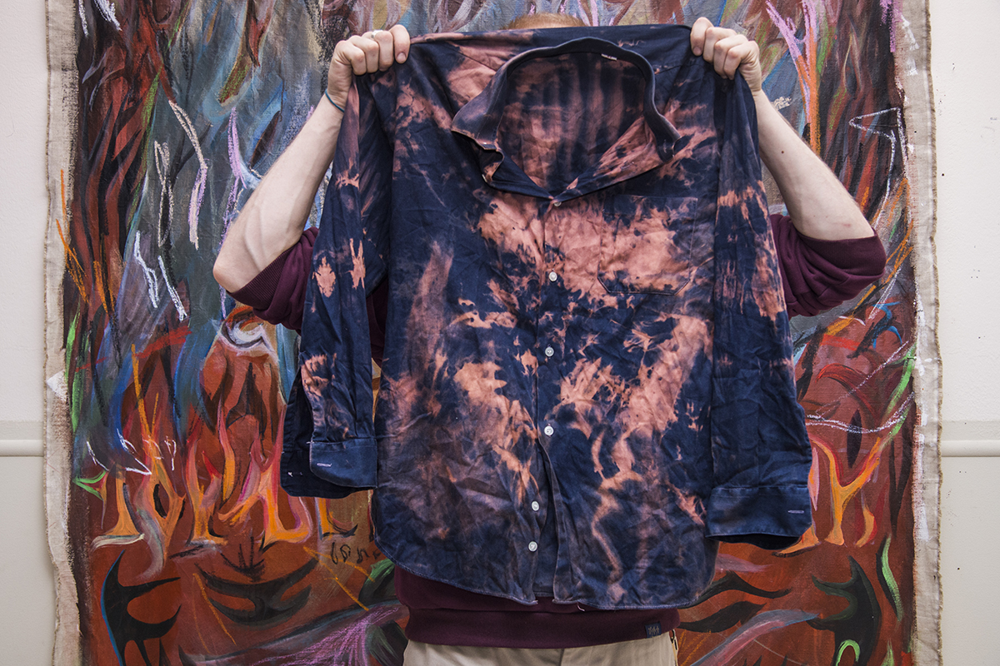
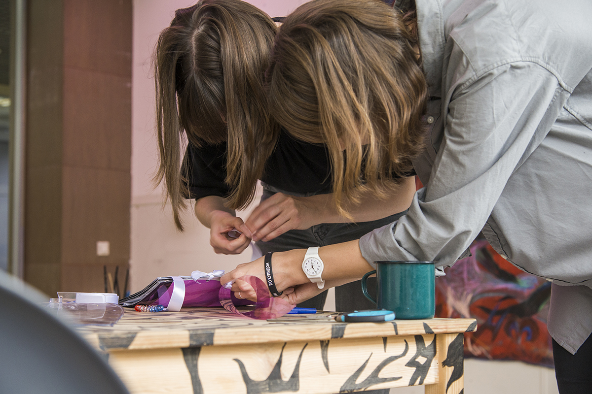
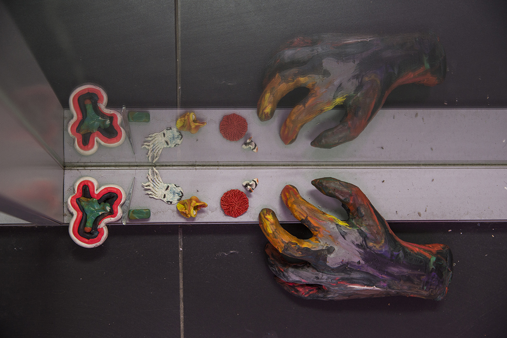
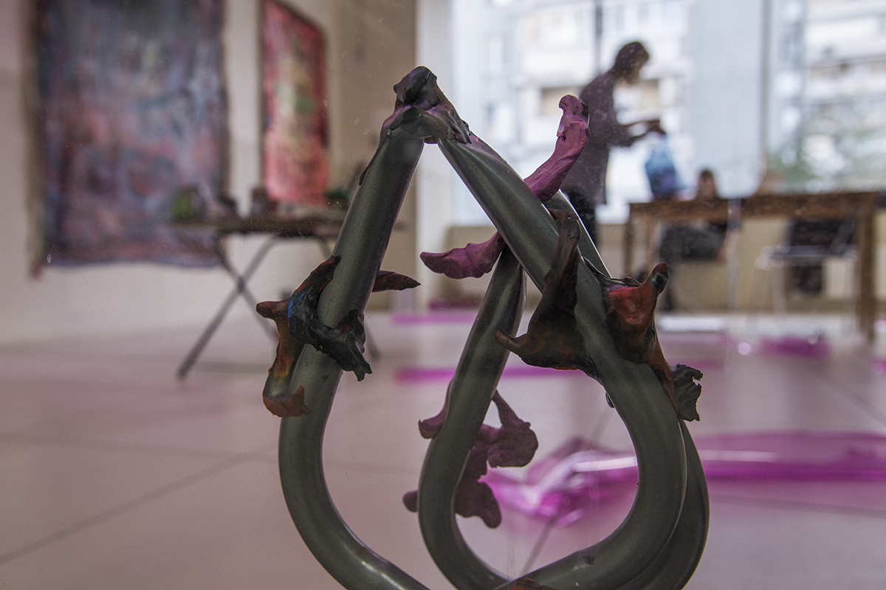
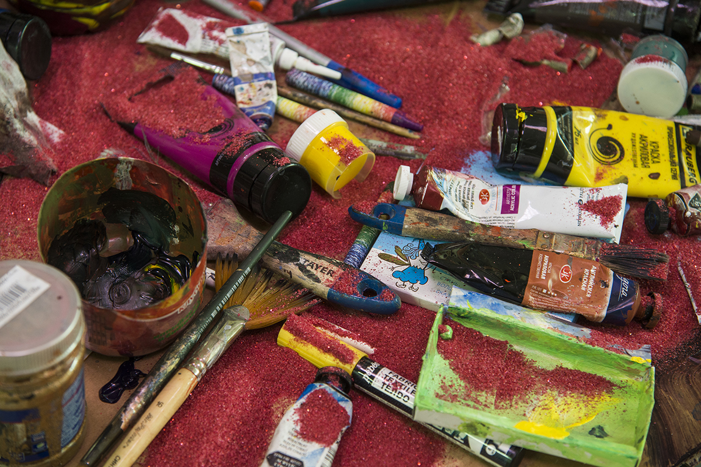
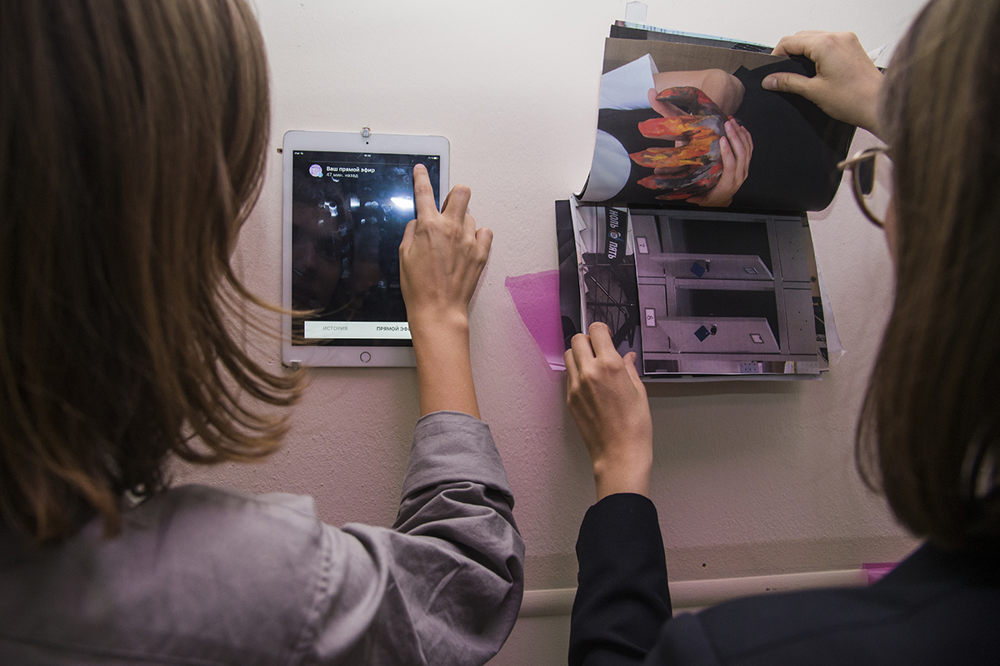
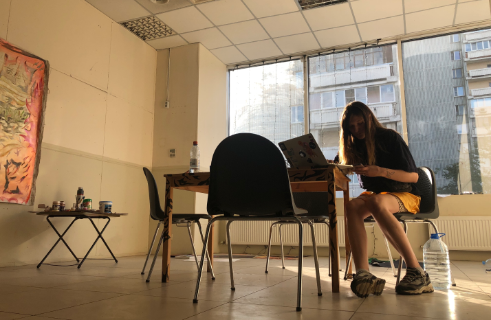

Анна Таганцева-Кобзева (Россия)
Проект «Лили»

Интервенция в торговом центре «РТС» в Лефортово
Художница Анна Таганцева-Кобзева на три недели переместила свою мастерскую c завода «МОСШТАМП» в местный торговый центр в районе Лефортово – главную точку притяжения жителей. На протяжении многих лет этот комплекс является единственным местом, где в пешей доступности можно купить продукты, свежую выпечку, хозтовары; здесь есть аптеки, прачечная самообслуживания и даже бильярдная. За время своего пребывания в ячейке торгового центра Анна знакомилась с площадкой, сотрудниками и местными жителями, работала и приглашала всех в гости делиться опытом и вместе создавать пространство мастерской.
В гости к Анне приходили бабушка с внучкой, мамы с детьми, которые интересовались «а не студия рисования ли это» и хотели записаться к ней на занятия. Заходили соседи по торговому центру, а работающий в нем электрик даже слепил ящерицу из пластилина.
За время путешествия по району Анна познакомилась с работниками библиотеки им. А. Грина, в которой ей рассказали про местные мастерские художников и познакомили с фотографом и парой скульпторов, которые живут и работают неподалеку. К художнице в торговый центр приходили студенты из Военного университета Министерства обороны РФ напротив. А на закрытие проекта соседи из кальянной принесли пиццу собственного приготовления. Так Анне удалось выстроить сеть знакомств и пересечений, представленных на карте.
Важно, что Анна работала в мастерской ТЦ так же, как она это делает в своей студии на «МОСШТАМПЕ», – не меняя стиля, не критикуя процессов, происходящих в торговом комплексе – она старалась стать частью этого места, как посетители и работники магазина хозтоваров, парикмахерской, кальянной, кафе и других торговых точек.
Одним из результатов работы Анны стала видео игра, которая представила это место в виде коллективного опыта проживания пространства.
В гости к Анне приходили бабушка с внучкой, мамы с детьми, которые интересовались «а не студия рисования ли это» и хотели записаться к ней на занятия. Заходили соседи по торговому центру, а работающий в нем электрик даже слепил ящерицу из пластилина.








Важно, что Анна работала в мастерской ТЦ так же, как она это делает в своей студии на «МОСШТАМПЕ», – не меняя стиля, не критикуя процессов, происходящих в торговом комплексе – она старалась стать частью этого места, как посетители и работники магазина хозтоваров, парикмахерской, кальянной, кафе и других торговых точек.
Одним из результатов работы Анны стала видео игра, которая представила это место в виде коллективного опыта проживания пространства.
Даты реализации проекта: 23 августа – 14 сентября 2019 года
Фото: Таня Сушенкова и Наталья Меликова
Фото: Таня Сушенкова и Наталья Меликова

Анна Таганцева-Кобзева
Родилась в 1990 году в Санкт-Петербурге, Россия. Живет и работает в Москве. Анну интересуют способы взаимодействия с миром, полным информации, перепроизводства товаров и эмоций и выстраивание отношений между людьми-объектами-средой обитания-природой.


Есть ли у вас
мастерская?
78% | 36% |
| опрошенных считают, что художнику необходима мастерская | художников имеет мастерскую в данный момент |